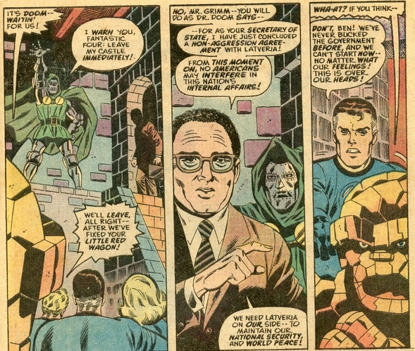

so i've started trying to get back into reading, like, actual books
i was scrolling on nyt, seeing if there were any good comment sections to eat popcorn to, when i came across this lil column by our favorite conservative columnist ross douthat
i'm not going to get into how good his takes are, but what i am going to say is that i looked at his reading list and my brain was like, "it has been a hot minute since you've read..."
and here i am
think it'd be a waste of reading if i didn't at least make something out of it, so here i am, writing this blog post that probably no one will read
there's so many quotes that are just hilarious when taken out of context
Forty years ago grandees could still hang the pelts of the wild animals they had killed upon their walls. In today's educated class that would be considered an affront to humane values.
yeah no i asked all my friends and they, including me, were like "this would just make me respect the person, not hate them"
in fact i was staying at an alaska airbnb with my family over summer and the owner had this pelt of a bear that her son had supposedly killed. when i was told that, i was just like "damn, must be a cool son you have"
The rejection of authority and custom doesn’t lead to blissful liberation, they argued; it leads to self-destructive behavior.
classic conservative reaction or something idk
But today’s infinite kitchens have lunch counters and stools and built-in televisions and bookshelves and computer areas and probably little “You Are Here” maps for guests who get lost on their way to the drink station.
this is the wittiest i've ever seen david brooks been
The young intellectual will see such six-figure celebrities as […] Henry Kissinger, who emigrated from studies of Metternich to politics to economic consulting;
REST IN PISS KISSINGER NO ONE MISSES YOU
oh also one of my friends sent this image in response

a young woman newly graduated from a fancy university who dreams of establishing herself as the Henry Kissinger of her generation.
this same friend said to this "welcome back madeleine albright"
but imagine walking out of college and thinking, "hm, today i will interfere in some latin american elections"
She could become an expert on Middle Eastern affairs, but suppose there were to be peace in the Middle East; that would be calamitous.
look i know the section this chapter is in is supposed(?) to be satirical but jesus christ
To get the most attention, the essay should be wrong.
They will divulge their orgasm patterns or, better yet, those of their predatory stepfathers.
The practitioners talk so much about how healthy [sex] is that you'd think they were doing jumping jacks.
The loser who flunked out of Harvard and never showered is worth $2.4 billion in Silicon Valley.
So they don't just enjoy orgasms; they achieve orgasm.
gives off the same energy as this youtube video:
i guess that's what happens when you don't read for this long
a part of me is like "who uses these words anyways"
but eh, i guess knowing new words can't hurt
gonna try to use proper grammar on this one
but probably going to let some informalities here and there